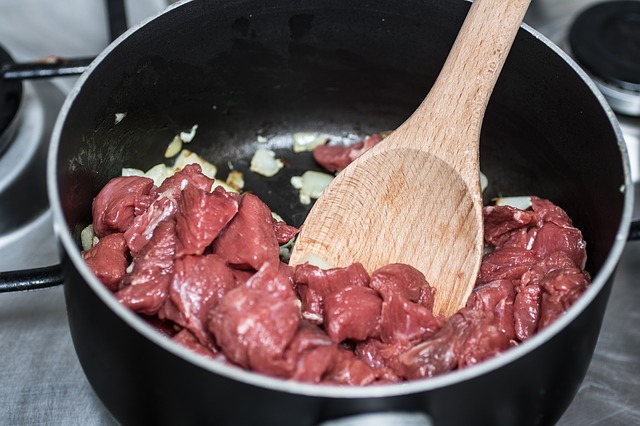

Beef Stew

Description
Hot, mouth-watering beef stew for when you're so
hungry, your stomach's rumbling is causing earthquakes.
Ingredients
- Vegetable oil, for searing
- 2 1/2 pounds beef chuck, cut into 2-inch cubes
- Kosher salt and freshly ground black pepper
- 2 tablespoons unsalted butter
- 2 medium onions, cut into 6ths
- 5 cloves garlic, crushed
- 1 tablespoon tomato paste
- 1/3 cup all-purpose flour, or to cover
- 10 cups cold water, or chicken or beef broth, homemade or low-sodium canned
- 6 sprigs parsley
- 6 sprigs fresh thyme
- 2 bay leaves
- 1 1/4 pounds medium red potatoes, quartered
- 4 medium carrots, cut into 2-inch pieces
- 2 celery stalks, cut into 2-inch pieces
- 7 canned whole, peeled tomatoes, lightly crushed
- 2 to 3 teaspoons red wine vinegar, or to taste